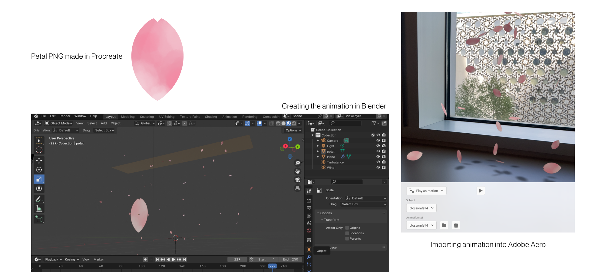
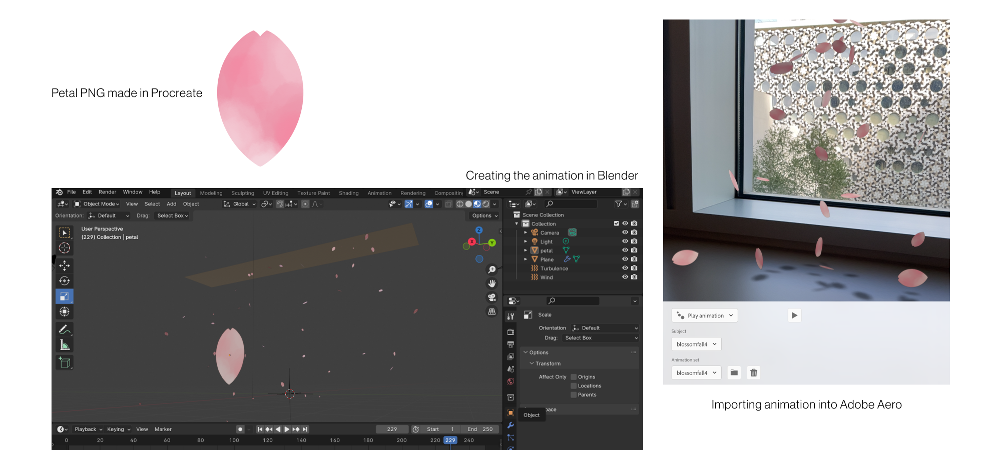
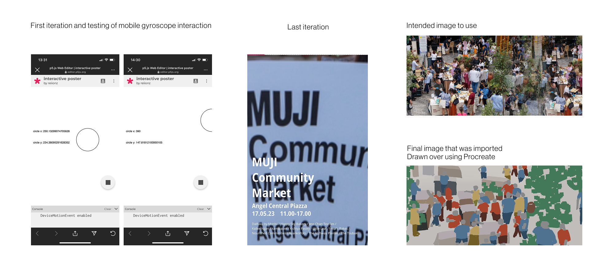
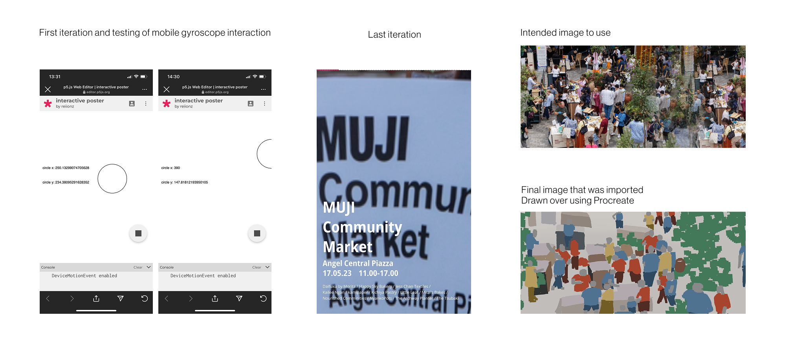
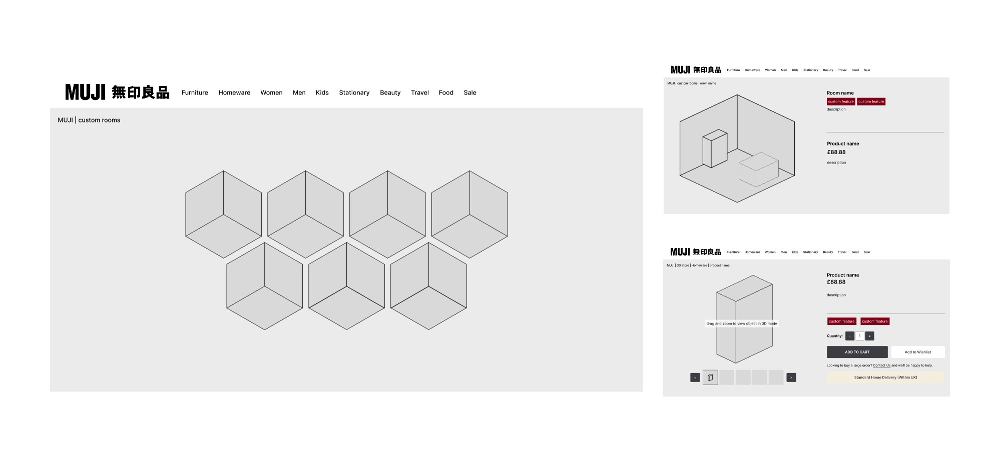
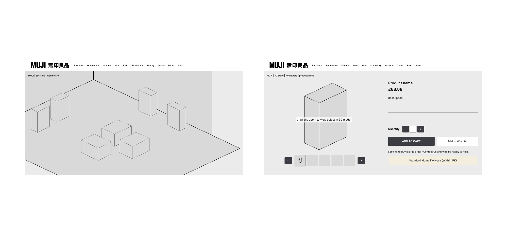
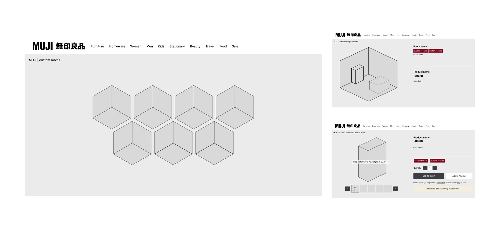
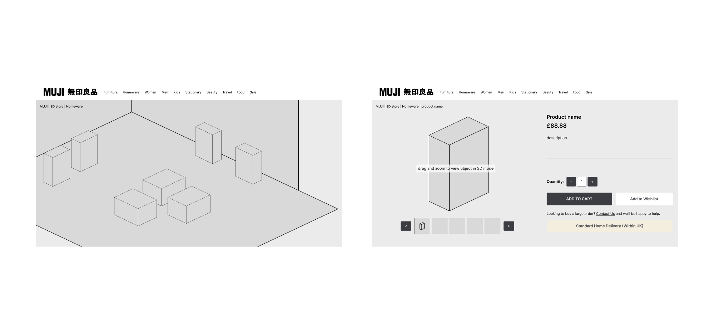

Pecha kucha
customisation options - using muji products as a blank canvas people can customise them - have a shared community where people post / suggest customisation ideas with muji products
3D interactive models of products AR animated 3D models when scanning qr codes in store or through paper catalogue
use of holographic for in store fantasy immersion
unique display of guides for products that are complex to use / not known enough for general audience
use of Japanese props more identity
have different areas for the categories of products
- make the space more open and areas are more defined
in store service more engaging
- have people who have specialise knowledge in said areas - e.g someone with skincare knowledge manages the beauty and skin care range
have a seasonal digital catalogue featuring other peoples way of using muji products
- website catalogue theme

 

 

 


